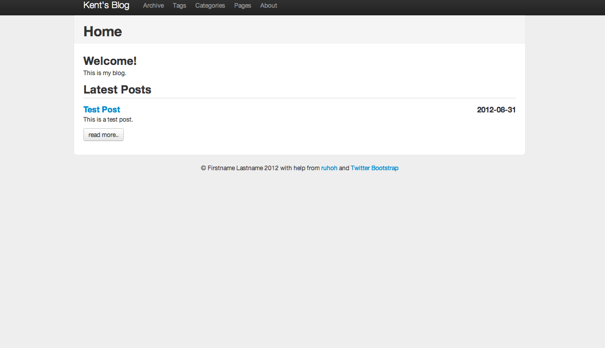
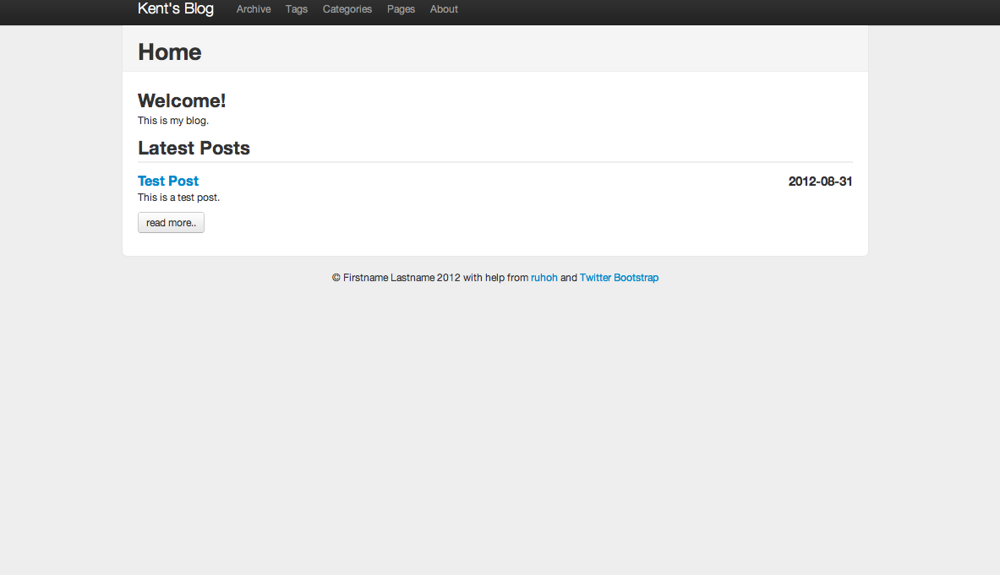

感謝您對「自由軟體鑄造場」的支持與愛護，十多年來「自由軟體鑄造場」受中央研究院支持，並在資訊科學研究所以及資訊科技創新研究中心執行，現已完成階段性的任務。 本網站預計持續維運至 2021年底，網站內容基本上不會再更動。
也紀念我們永遠的朋友 李士傑先生（Shih-Chieh Ilya Li）。
也紀念我們永遠的朋友 李士傑先生（Shih-Chieh Ilya Li）。
什麼是資源表列?
ruhoh
Rate this listing
0 vote
繼 nanoc、 jemdoc 之後，ruhoh又是一款用來管理生成靜態網頁的工具。 ruhoh 標榜它是一個部落格平台，而且是唯一一個有語言-無關 API 的工具。它的目標族群是程式軟體開發人員，所以操作都是使用指令行 ( comment line )， 但是因為它提供很好的指令界面, 因此其實並不會很難上手。
ruhoh 的架構是非常彈性的。透過套件的架構設計，使用者可以自己依照需求修改套件或是新編套件。從編排、編譯器到語法分析都可以依照使用者自己的喜愛編輯。而 ruhoh 所謂語言無關指的是只要透過它的規範，無論用的是什麼程式語言，都可以作出 ruhoh 套件。此外，在顧及功能面的同時， ruhoh 也試著兼顧到對網頁設計的支援。 ruhoh 能夠根據設計風格做到各個設定元素有不同命名空間的設計。
ruhoh 的架構是非常彈性的。透過套件的架構設計，使用者可以自己依照需求修改套件或是新編套件。從編排、編譯器到語法分析都可以依照使用者自己的喜愛編輯。而 ruhoh 所謂語言無關指的是只要透過它的規範，無論用的是什麼程式語言，都可以作出 ruhoh 套件。此外，在顧及功能面的同時， ruhoh 也試著兼顧到對網頁設計的支援。 ruhoh 能夠根據設計風格做到各個設定元素有不同命名空間的設計。
ruhoh 是一個 ruby 的套件，因此可透過 gem 來取得。
接下來，創立一個新的專案然後開啟伺服器。
ruhoh 的設定檔是一個放置在專案根目錄的一個叫 config.yml。 本篇只會應用到預設的設定，所以並不會修改到這個文檔，但是有興趣的讀者可以打開這個檔案多瞭解ruhoh 所支援的功能。
首先，注意一下專案目錄裡的設置：
這會新增一個 about.md 的檔在 pages 資料夾之下。
如果需要一個子目錄則可以直接輸入：
如果你輸入
眼尖的讀者可能已經發現 ruhoh 的預設檔案格式是 markdown(.md)。如果不喜歡的話，可以用以下的來更改：
接下來，我們將介紹之前 nanoc 以及 jemdoc 沒有的概念： post 跟 draft。
ruhoh 的定位是作為一個部落格的工具，所以特別發展了這兩種類型。
post 主要是讓使用者可以很方面的撰寫文章。post 也是預設成markdown(.md) 的格式。post 可以用以下的指令生成：
另一種就是 draft。 Draft 的使用方式跟 post 基本是一樣的。他們的差別在於 draft 不會被編譯到production 的環境中。
除了文章的類別， ruhoh 也提供兩種便於分類的功能：category 跟 tag 。
這兩種方式都有助於文章管理。如果要利用 category 跟 tag 就必須要利用文章的 meta-data。打開之前創造的 posts/test.md ，然後作出以下的編輯：
再來,我們到 pages/index.html

ruhoh 的架構是非常彈性的。透過套件的架構設計，使用者可以自己依照需求修改套件或是新編套件。從編排、編譯器到語法分析都可以依照使用者自己的喜愛編輯。而 ruhoh 所謂語言無關指的是只要透過它的規範，無論用的是什麼程式語言，都可以作出 ruhoh 套件。此外，在顧及功能面的同時， ruhoh 也試著兼顧到對網頁設計的支援。 ruhoh 能夠根據設計風格做到各個設定元素有不同命名空間的設計。
簡介
繼 nanoc、 jemdoc 之後，ruhoh又是一款用來管理生成靜態網頁的工具。 ruhoh 標榜它是一個部落格平台，而且是唯一一個有語言-無關 API 的工具。它的目標族群是程式軟體開發人員，所以操作都是使用指令行 ( comment line )， 但是因為它提供很好的指令界面, 因此其實並不會很難上手。ruhoh 的架構是非常彈性的。透過套件的架構設計，使用者可以自己依照需求修改套件或是新編套件。從編排、編譯器到語法分析都可以依照使用者自己的喜愛編輯。而 ruhoh 所謂語言無關指的是只要透過它的規範，無論用的是什麼程式語言，都可以作出 ruhoh 套件。此外，在顧及功能面的同時， ruhoh 也試著兼顧到對網頁設計的支援。 ruhoh 能夠根據設計風格做到各個設定元素有不同命名空間的設計。
安裝說明
本文假設讀者有些許的命令行操作的經驗，並在一台裝有 Ruby，以及 Rubygems 這個套件管理工具的主機上操作。ruhoh 是一個 ruby 的套件，因此可透過 gem 來取得。
gem install ruhoh安裝後，即可直接從指令行執行。輸入以下已確定安裝成功。
ruhoh help讀者應該會看到一系列的命令以及解釋。
接下來，創立一個新的專案然後開啟伺服器。
ruhoh new myblog cd myblog rackup -p 9292現在到 https://localhost::9292 應該會看到一個範例頁面。
使用說明
筆者將利用以下的篇幅來說明ruhoh 的基本架構跟用法。如同之前我們介紹靜態網頁工具，本篇的目標也是建立一個個人的網頁(含部落格)。我們將介紹 ruhoh 的管理邏輯還有如何創造新的文檔。ruhoh 的設定檔是一個放置在專案根目錄的一個叫 config.yml。 本篇只會應用到預設的設定，所以並不會修改到這個文檔，但是有興趣的讀者可以打開這個檔案多瞭解ruhoh 所支援的功能。
首先，注意一下專案目錄裡的設置：
- config.yml: 以YAML格式寫成的設定檔
- dash.html: 網站儀表板的HTML
- compiled: 編譯過後的文檔
- media: 存放媒體檔案如圖片,影片,PDF的資料夾
- pages: 存放網頁的資料夾.本篇大部分的文檔都存放在這裡
- partials: 處理排版的一些程式碼.可以動態被載入網頁或排版格式
- plugins: 擴張ruhoh基本功能的插件
- posts: 存放貼帖的資料夾
- site.yml: 網站用的YAML檔案. 可被排版檔跟網頁利用
- themes: 存放設定主題的資料夾
- widgets: 存放小工具的資料夾
ruhoh page about.md
這會新增一個 about.md 的檔在 pages 資料夾之下。
如果需要一個子目錄則可以直接輸入：
ruhoh page projects/about.md
如果你輸入
ruhoh page projects/aboutruhoh 會創造一個 index.md 在 about 的資料夾之下。對於喜歡乾淨的 URL 的人,這是個很不錯的選項。
眼尖的讀者可能已經發現 ruhoh 的預設檔案格式是 markdown(.md)。如果不喜歡的話，可以用以下的來更改：
ruhoh page projects/about --ext .html
接下來，我們將介紹之前 nanoc 以及 jemdoc 沒有的概念： post 跟 draft。
ruhoh 的定位是作為一個部落格的工具，所以特別發展了這兩種類型。
post 主要是讓使用者可以很方面的撰寫文章。post 也是預設成markdown(.md) 的格式。post 可以用以下的指令生成：
ruhoh post "Test"接下來，就生成檔案 posts/test.md， 注意這裡名稱是可有可無的，如果只有 `ruhoh post`，ruhoh 會生成一個 untitled.md 的檔。
另一種就是 draft。 Draft 的使用方式跟 post 基本是一樣的。他們的差別在於 draft 不會被編譯到production 的環境中。
除了文章的類別， ruhoh 也提供兩種便於分類的功能：category 跟 tag 。
這兩種方式都有助於文章管理。如果要利用 category 跟 tag 就必須要利用文章的 meta-data。打開之前創造的 posts/test.md ，然後作出以下的編輯：
--- title: Test Post date: '2012-08-31' description: "This is just a sample description" categories: ['blog', 'code'] ---另一種定義方式也可以：
--- title: Test Post date: '2012-08-31' description: "This is just a sample description" categories: - 'blog' - 'code' ---tag 的用法跟 category 一模一樣. 譬如：
--- title: Test Post date: '2012-08-31' description: "This is just a sample description" categories: - 'blog' - 'code' tags: [markdown, tutorials] ---在解說完一些 ruhoh 的基本組成元素以後，讓我們來實用這些概念。
案例實作
結合之前的知識, 現在我們首先來作一個介紹頁.先開啓site.yml, 然後輸入以下:title : Kent's Blog tagline: Blog Tagline author : name : Kent Chen email : blah@email.test github : username twitter : username feedburner : feedname navigation : - archive.html - tags.html - categories.html - pages.html - about.md重溫一下，site.yml 裡的資料可以很輕易地給其他的網頁利用到，所以有些資訊只要在這個檔案裡面定義即可。
再來,我們到 pages/index.html
--- title: Home description: --- ＜h2＞Welcome!＜/h2＞ ＜p＞This is my blog.＜/p＞ ＜h2＞Latest Posts＜/h2＞ } ＜div class="post"＞ ＜h3 class="title"＞＜a href="https://www.openfoundry.org/%7B%7Burl%7D%7D">}＜/a＞＜span class="date"＞}＜/span＞＜/h3＞ }} ＜div class="more"＞＜a href="https://www.openfoundry.org/%7B%7Burl%7D%7D" class="btn"＞read more..＜/a＞＜/div＞ ＜/div＞ }我們接著編輯我們之前創建的 pages/about.md：
--- title: About description: --- Hi all, my name is Kent Chen. I like to - Read - Cook - Code然後還有posts/test.md
--- title: Test Post date: '2012-08-31' description: "This is just a sample description" categories: blog, code --- This is a test post.這樣就大致完成我們之前有提到的概念.輸入以下指令來編譯網頁:
ruhoh compile然後
rackup -p9292瀏覽網址 https://localhost:9292/ 就可以觀賞成果了

參考資料
ruhoh官方網站, https://ruhoh.com/Reviews (0)
Be the first to review this listing!
自由軟體鑄造場 製作 最佳瀏覽狀態：IE7或Firefox2.0以上 (建議使用Firefox) ‧ 解析度1024*768
E-Mail：contact@openfoundry.org Address：台北市南港區研究院路2段128號 中央研究院資訊科學研究所 . 隱私權條款. 使用條款
E-Mail：contact@openfoundry.org Address：台北市南港區研究院路2段128號 中央研究院資訊科學研究所 . 隱私權條款. 使用條款